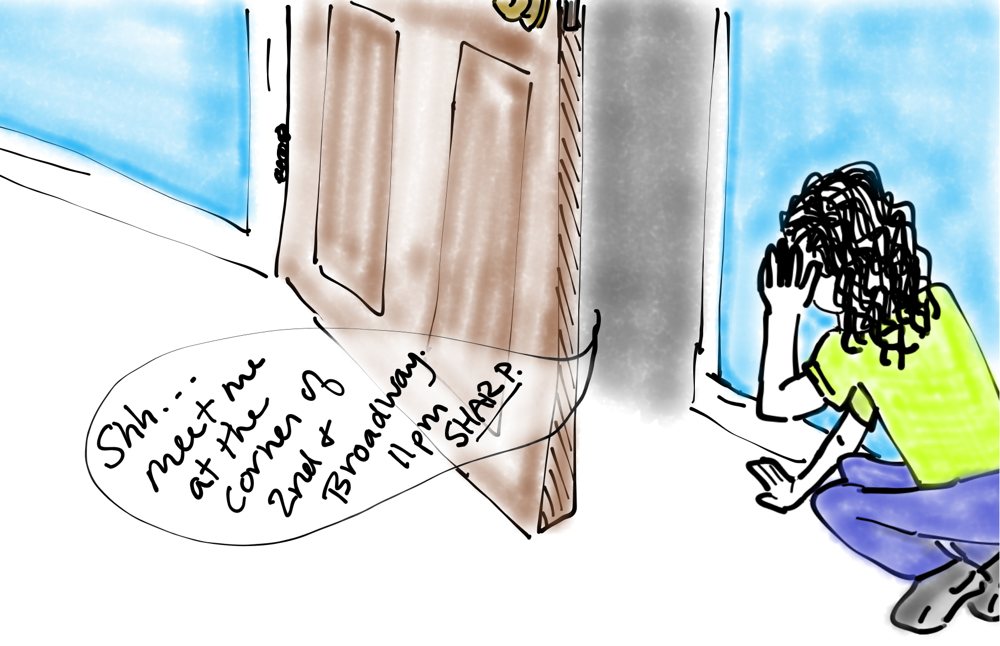

TODO Sketch of stealing mail from a mailbox
A competing pizza shop steals orders because the channel isn't secure.
So far every channel we've sent on has been a public name like @"pizzaShop". Anyone can send a message to this channel (which is good for business) but anyone can receive a message on it (which is terrible for business). Imagine if competitors could consume pizza orders so that the pizza shop never received them.
Bound and Free Names
We learned how to receive messages with for and contract last time. Both of these constructs "bind" names. For example, order is a bound name within the coffee shop code.
bound1
The same is true when we use contracts.
bound2
A name is considered bound if it only exists inside a specific process and can't be accessed from outside. So the name order is bound in the coffee code.
TODO: Insert some questions or exercises here.
The new Operator
for and contract are perfect for binding names inside of continuations. But what if we want to create a bound name to send messages on? For example, our pizza shop would prefer not to have its orders intercepted. We solve this with the new operator.
newPizzaShop
First notice that pizzaShop is a name even though it doesn't start with @. That's because the new operator created it as a name directly rather than by quoting some written-down process. But it does still quote a process as you'll see in the exercises.
Second, notice that while this technique does prevent other pizza shops from consuming orders, it also prevents new customers from ordering. We'll solve this problem in the lesson on bundles.
Private vs Unforgeable

Although the messages can no longer be stolen, they can still be eavesdropped on. You've been warned.
Within the world of the rholang these new names really are private. But remember that human programmers can look in to that world from the outside. That is especially true when working in a blockchain context.
So while a competing pizza shop can no longer consume pizza orders intended for our shop, they can still read the orders with a block explorer.
Acknowledgement Channels
include Julie drawing of "roger that" or "I'll call you back"
One common use of unforgeable names is "acknowledgement channels". Instead of confirming orders by printing to the screen and disturbing everyone, the pizza shop should really just let the customer know that the order has been placed.
To do that the pizza shop needs to know how to contact the customer. So the customer should supply an acknowledgement channel to be called back on. Traditionally such a channel is named ack.
pizzaAck
Sending Names Gives Permission
include Julie drawing of hungry customer who received a fake ack.
We just saw how the customer can give the shop an ack channel to receive order confirmation. It turns out we can do even better. With our previous code, anyone could contact the customer on the ack channel. That means anyone could send a forged ack making the customer think the order was placed when really it wasn't.
privateAck
The solution is to create a new unforgeable name, and give a copy of it to the pizza shop so that only they can call you back. Even though the pizza shop is outside of the new alice, it can still send on the channel because alice gave it the channels name. This is a wonderful way to delegate priveledges.
In this example we trust the shop to only send on the ack channel, but notice that it could also receive if it wanted to. We'll learn later how to give out only some of those permissions in the lesson on bundles.
stdoutAck and stderrAck
Now that you understand ack channels, you should know about two other ways to print to the screen. They are channels called @"stdoutAck" and @"stderrAck". They work just like their cousins from lesson 1, but they take an ack channel.
stdoutAck
By the way, did you ever notice the handful of stuff that always starts in a fresh tuplespace? Four of those things are the built-in receives for the screen-printing channels. (The others are for cryptography. We'll discuss them later.)
Exercises
@"stdout"!("1")|@"stdout"!("2")|@"stdout"!("3")
Notice that this program does not print the numbers in any particular order. The calls happen concurrently (although some implementations may have an order). Imagine we really need these lines to print in order. Modify the code to use ack channels and ensure that the numbers get printed in order.
If new x in {} makes x a name, then *x must be a process. We know processes can be printed. What happens when you print *x? How is this different from processesd we have printed?
Now that you know the process (that hex code) You may think you can just quote it to get the same name back. Try to quote the process and see what happens.
Predict how this program will run (what it outputs and how it reduces in the tuplespace). Then run it to test your prediction.
new myChan in {
myChan!("Hi There")
}
|
for (msg <- myChan) {@"stdout"!(*msg)}
If your prediction for the previous exercise was wrong, modify the program so it actually does what you predicted it would.
Quiz
Which name is bound in for(x <- y){0}
Which name is bound in new x in {0}
What code would a bad pizza shop have to write to intercept orders?
If pizzzaShop is a name, then what is @pizzaShop?
Why did the pizzaShopAck code send "bob" as an ack channel instead of @"bob"?